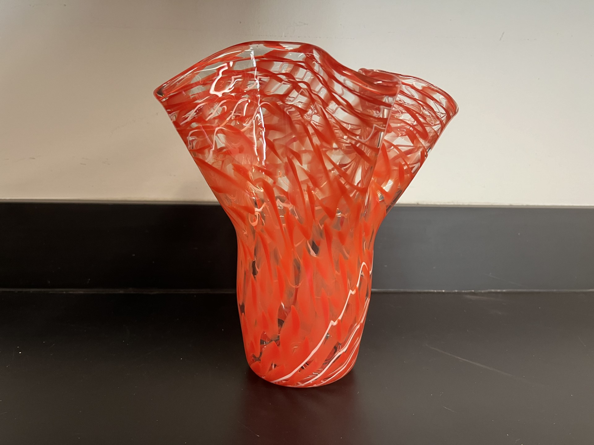
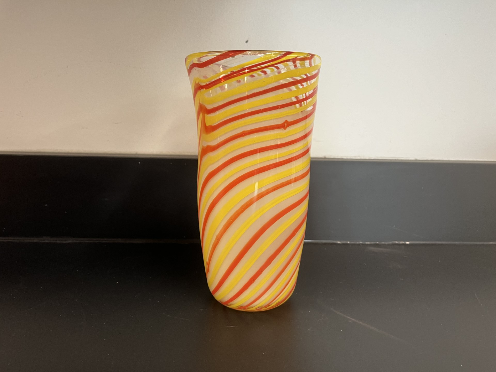
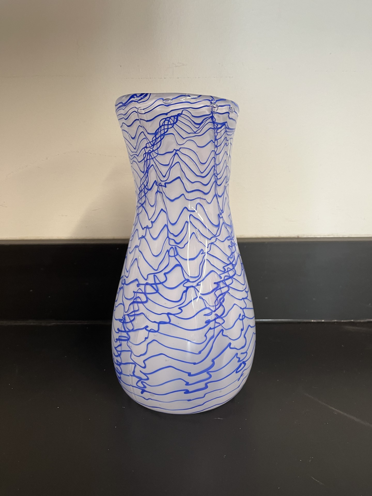
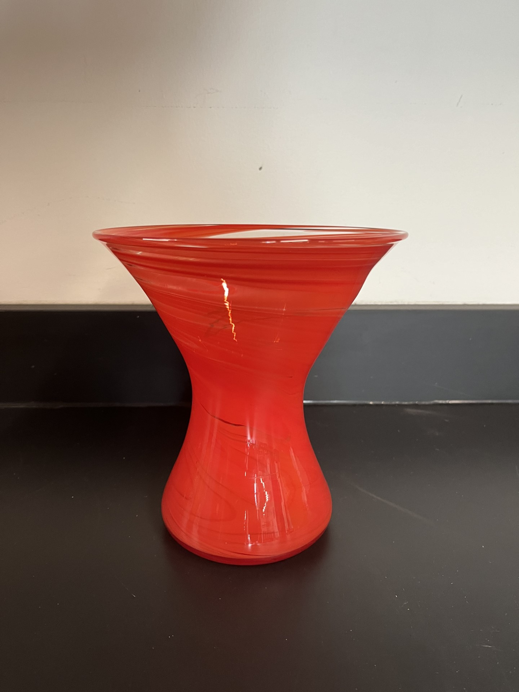

Glass Blowing Vases
Explore our custom, hand-made glass products. These were created on campus by Iowa State students.

This fluted red vase was blown by a Gaffer's Guild member.

This is a cyclone themed straight vase blown by a member of the Gaffer's Guild.

This is a vase made with a white base of white frit covered with swirls of blue cane. It was made by a member of the Gaffer's Guild.

This is a red drop vase made by a member of the Gaffer's Guild.